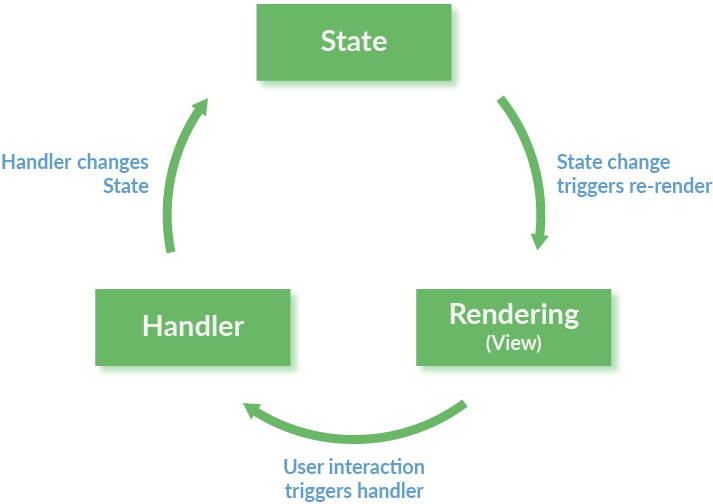
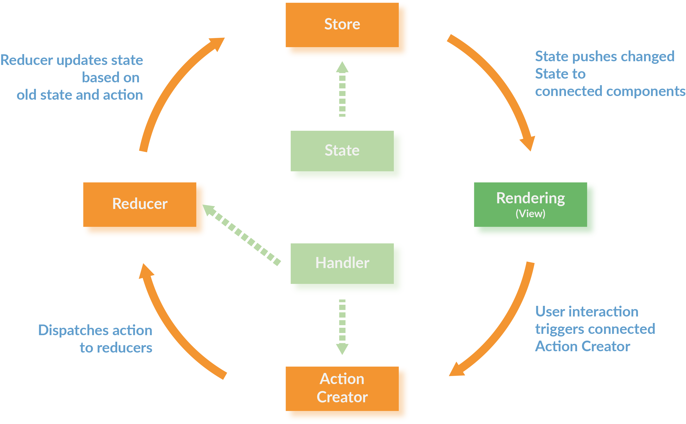

React Workshop - Vorbereitung
-
-
git clone https://github.com/reactbuch/react-workshop.git - oder
git pull
-
- Im geklonten Verzeichnis:
npm install
(Dafür evtl. einen Proxy konfigurieren http://wil.boayue.com/blog/2013/06/14/using-npm-behind-a-proxy/) -
npm run start-backend - In neuem Terminal:
- in
code/workspacewechseln - Ausführen:
npm start
- in
- Browser öffnen: http://localhost:8080
- Wenn dort ein Hello-World-Text erscheint ist alles gut
Folien: Im geklonten Verzeichnis
2018_react-jest.html
oder: https://reactbuch.github.io/react-workshop/2018_react-jest.html
Webanwendungen entwickeln
Single-Page-Anwendungen mit React, Redux und TypeScript
Nils Hartmann / @nilshartmann
Inhalt
- Teil 0: React-Einführung und Build-Prozess
- Teil I: React-Komponenten (Grundlagen)
- Teil II: React-Komponenten: Details, Hierarchien und Anwendungen
- Teil III: Daten lesen und schreiben vom Server
- Teil IV: React Anwendungen mit TypeScript entwickeln
- Teil V: Externes Statemanagement mit Redux
Jederzeit: Fragen und Diskussionen!
Beispiel-Anwendung

Teil 0
React-Einführung und Build-Prozess
React
- Framework von und für Facebook
- Eingesetzt u.a. von Microsoft, Paypal, Spotify uvm
- Minimales API
- Minimales Feature Set
- Ihr könnt/müsst viele Entscheidungen selber treffen
- Bewusste Verstöße gegen Best-Practices
- Zentrales Konzept: Komponenten
Komponenten in React

Komponenten in React
Unser Beispiel in Komponenten

React Komponenten
- bestehen aus Logik und UI
- keine Templatesprache
- werden deklarativ beschrieben
- werden immer komplett gerendert (kein 2-Wege-Data-Binding)
- werden zu ganzen Anwendungen aggregiert
React Komponenten
- Werden als ES6 Klasse (oder Funktion) implementiert
- Keine Templatesprache (stattdessen JavaScript)
- Templates können HTML-artige Syntax enthalten (JSX)
Eine erste Komponente: Hello, World!
- Beispiel Schritt-für-Schritt (
code/workspace-live-coding)
Hello World React
import React from "react";
export default class HelloMessage extends React.Component {
constructor(props) {
super(props);
this.state = {greeting: props.initialGreeting};
}
render() {
return (
<div>
<input
value={this.state.greeting}
onChange=
{event => this.setState({greeting: event.target.value})}
/>
<p>{this.state.greeting}, World</p>
</div>
);
}
}Aufruf
index.html
<html>
<body>
</body>
<script src="dist/main.js"></script>
</html>
main.js
import React from 'react';
import ReactDOM from 'react-dom';
import HelloMessage from './HelloMessage';
const mountNode = document.getElementById('mount');
ReactDOM.render(<HelloMessage initialGreeting="Hello"/>, mountNode);
Hintergrund
ES6 Features
ES6: Klassen
class Person {
constructor(name) {
this._name = name;
}
getName() {
return this._name;
}
}
class Programmer extends Person {
constructor(name, language) {
super(name);
this.language = language;
}
code() {
return `${this.getName()} codes in ${this.language}`;
}
}const programmer = new Programmer('Erna', 'JavaScript');
console.log(programmer.code());
console.log(programmer instanceof Programmer); // true
console.log(programmer instanceof Person); // trueES6: Module, Importe und Exporte
ES6: Export einer einzigen Klasse
// Person.js
class Person {
// ...
}
export default Person;
// Person.js
// in einer Zeile zusammengefasst
export default class Person {
// ...
}
ES6: Import
// Programmer.js
import Person from './Person';
export default class Programmer extends Person {
// ...
}
ES6: Benannte Exporte
// util.js
export function displayInPage(text) {
document.body.innerHTML +=
`${text}
` ;
}
export showInfo = msg => window.alert(`Wichtige Info: ${msg}`);
// or
function displayInPage(text) { . . . }
const showInfo = ...;
// specify exports
export { displayInPage, showInfo };
import {displayInPage} from "./util";
displayInPage('Hello, World');
ES6: Arrow Functions
const displayInPage = (text) => {
return document.body.innerHTML +=
`${text}
`;
};// Klammern können weggelassen werden, genau ein Parameter
// ebenso die geschweiften Klassen, wenn nur ein Statement:
const displayInPage = text => document.body.innerHTML += `${text}
`;
ES6: Template Strings
Template Strings werden in Backticks (``) geschrieben und können Ausdrücke (in
${}) enthalten:
const name = "Susi";
const greeting = `Hello, ${name}`; // Hello, Susi
const four = `Two and two is: ${2+2}` // Two and two is: 4
const time = `The time is: ${new Date()}`); // The time is: ...
Hintergrund
Buildprozess
Buildprozess
- ES6ff- und JSX-Code muss nach ECMAScript 5 übersetzt werden
- Status der ES6 Implementierungen der Browser: https://kangax.github.io/compat-table/es6/
- Typische Werkzeuge
- Babel oder TypeScript (Compiler)
- Webpack (Bundler)
- Webpack Dev Sever (HTTP Server mit Hot Reload)
Webpack und Babel

Webpack Development Server
- Zum Ausführen der Anwendung wird ein Webserver benötigt
- Für die Entwicklung
Webpack Dev Server:
- ...führt Webpack auf Basis der Projekt Webpack Konfiguration aus
- ...erzeugt Ausgabe in Memory (Performance)
- ...Hot Reloading: Automatische Aktualisierung nach Code Änderung
- ...React Hot Loader: Zustand bleibt nach Aktualisierung erhalten (Beta)
create-react-app
User GuideBootstrap von React Anwendung
Fertige Konfiguration von Webpack, React, ...
Der yarn Package Manager
https://yarnpkg.comAlternative zu NPM
Verwendet ebenfalls package.json
Etwas anderes Kommandozeileninterface:
# Installiert alle Pakete aus der package.json
yarn
# oder:
yarn install
# Neues Paket installieren oder aktualiseren
yarn add [--dev] package
# Script aus package.json Ausführen
yarn SCRIPT_NAME
Das Beispiel-Project
Workspace
-
2018_react-jest.htmlSlides im Root-Verzeichnis -
code/workspace: Verzeichnis für Eure Übungen -
code/schritte: Fertige Stände nach den einzelnen Teilen -
code/material: Code als Ausgangspunkt für Übungen
Starten
- Im
Root-Verzeichnis (falls noch nicht geschehen):
npm run start-backend, um den REST-Server zustarten (einmal starten, dann einfach durchlaufen lassen) - In
code/workspace:
npm start, um Webpack DevServer zu starten. Kann durchlaufen, falls Reload nicht klappt, neu starten
Übung 0: React Hello-World
Mach dich mit den Werkzeugen vertraut und schreib deine erste React-Komponente
Schritt #1: Tool-Chain starten (falls noch nicht gemacht)
Nutze für die Übungen das
workspace-Verzeichnis in diesem Repository. Hier ist eine Tool-Chain mit Webpack und Babel
vorbereitet
-
npm install(auf oberster Ebene)
(Dafür evtl. einen Proxy konfigurieren http://wil.boayue.com/blog/2013/06/14/using-npm-behind-a-proxy/) -
cd code/workspace -
npm start - Öffne http://localhost:8080 im Browser
- Wenn auf der Seite 'Hello, World' steht, ist alles gut
Schritt #2: Deine erste React-Komponente
- Ersetze die "statische" Komponente (HelloMessage) mit der React-Komponente aus dem vorherigen Beispiel aus den Folien
-
Zusatzaufgabe: Experimentiere mit der Anwendung, mache einige Änderungen, wie z.B.
- Alle Eingaben sollen in Großbuchstaben auftauchen
- Gib irgendeine Rückmeldung wenn die Eingabe leer ist
Teil I
React-Komponenten (Grundlagen)
Ziel-AnwendungDokumentation
Themen
- Rendering
- Properties und Zustand
- Referenzen auf DOM-Elemente (Refs)
React: Rendering
Jede React-Komponente braucht eine
render-Methode:
- wird aufgerufen beim ersten Rendering und wenn sich der Zustand ändert
- kann HTML-artige JSX-Syntax nutzen
- liefert genau ein Element oder null oder ein Boolean oder ein Array oder ein Fragment oder einen String zurück
class GreetingDetail extends React.Component {
render() {
return (
<input onChange={event => this.updateModel(event.target.value)}
value={this.state.greeting} />
{this.state.greeting}, World
);
}
// ...
}
React: JSX
- Wird wie HTML hingeschrieben, inkl Attribute:
<div><input type="text"/></div> - Attribute, die keine Strings sind, müssen in {} eingeschlossen
werden:
<Counter label="Count" count={7} showValues={true} /> - Kann pures JavaScript enthalten, eingeschlossen in {}:
const title = 'Hello, World'; <h1>{title.toUpperCase()}</h1> -
class-Attribut heißtclassName:<h1 className="title">...</h1> - CSS-Eigenschaften werden als Objekt übergeben in
Camel-Case-Notation:
const styles = { marginLeft: '10px', border: '1px solid red' }; <h1 style={styles}>...</h1>
React: JSX #2
- Zuweisen an Variablen
const counter = <Counter label="..." /> - ...als Return-Wert:
function renderCounter(label) { return <Counter label="..." />; } - Fragmente (rendern selber kein Element in den DOM, nur ihre
Kind-Elemente):
render() { return <React.Fragment> <li>Yes</li> <li>No</li> </React.Fragment> } - null, false oder boolean, um nichts zu rendern:
render() { if (!someCondition) { return null; // oder false oder true } return ...; }
ES6: Erweiterte Objekt-Literale
// ES5:
const firstName = 'Klaus';
const person = {
firstName: firstName
};
console.log(person.firstName); // Klaus
// ES6:
const firstName = 'Klaus';
const person = {
firstName
};
console.log(person.firstName); // Klaus
ES6: Destructuring von Objekten
const person = {
fistName: 'Klaus',
lastName: 'Mueller',
age: 42
};const {firstName, age, notThere} = person;
console.log(firstName); // Klaus
console.log(age); // 42
console.log(notThere); // undefined
function someFunction({firstName, age, notThere}) {
console.log(firstName); // Klaus
console.log(age); // 42
console.log(notThere); // undefined
}
someFunction(person);
React: Properties und Zustand
- Properties werden der Komponente von außen übergeben (und nicht verändert)
- Zustand (State) ist eine innere Eigenschaft der Komponente (die verändert werden kann)
- Beides sind Objekte mit Key-Value-Paaren
Properties einer Komponente
- Properties werden über den Konstruktor in die Komponente hineingereicht
- Properties dürfen nicht verändert werden
- Zugriff über
this.props -
this.props.childrenenthält Kind-Elemente
class NavBar extends React.Component {
// (hier Constructor optional)
constructor(props) {
super(props);
}
render() {
return (
<div className="NavBar">
{this.props.title}
{this.props.children}
</div>
);
}
}
<NavBar title="Navigation"><a href=""> ... </a></NavBar>
Zustand einer Komponente
- Beispiel: Inhalt eines Eingabefelds, Daten vom Server, Menu offen oder zu
- Werte üblicherweise immutable
-
Initialisieren im Konstruktor mit
this.state={} - Zustand
lesen über
this.state - Zustand
setzen über
this.setState()- Achtung: kein "reiner" Setter
- Führt alten und neuen Zustand zusammen
- Wird asynchron ausgeführt!
- Löst erneutes rendern der gesamten Komponente aus
- Eines der zentralen Konzepte von React
Beispiel: Zustand einer Komponente
class GreetingDetail extends React.Component {
constructor(props) {
super(props);
this.state = { name: 'Klaus' };
}
updateModel(event) {
// Zustand ändern: Komponente wird neu gerendert
this.setState({name: event.target.value});
}
render() {
return <input value={this.state.name}
onChange={e => this.updateModel(e)} />
}
// ...
}
React: Events und Data Binding
Es gibt keine automatische Bindung an Modelle (2-Wege Databinding)
- DOM-Events werden in React-Events verpackt
- React-Events haben weitgehend selbe API wie DOM-Events
- Besonderes Event:
onChange
- onChange ist auf
input,textarea,selectdefiniert und verhält sich Komponenten- und Browser-übergreifend einheitlich
- onChange ist auf
class GreetingDetail extends React.Component {
render() {
return (
<input onChange={event => . . .} />
);
}
// ...
}
Render Zyklus

Virtual DOM
"Rendern" hat doppelte Bedeutung!

React: Referenzen auf nativen DOM
- Elementen kann eine Callback-Funktion
refsübergeben werden - Funktion wird nach dem Rendern mit Referenz auf DOM Element aufgerufen (oder
null) - Diese Referenz kann man z.B. als Member-Variable speichern
class HelloMessage extends React.Component {
render() {
return (
<input ref={inputElement => this.inputElement = inputElement}
onChange={...} value={...}
/>
<button
onClick={() => this.reset()}>
Clear
</button>
);
}
reset() {
this.setState({greeting: ""});
// focus() ist Funktion auf nativem DOM Element
this.inputElement.focus();
}
}
Properties, State und Instanz-Variablen
- Properties: Konfiguration von außen übergeben. Unveränderlich innerhalb der Komponente
- State: : Interner und veränderlicher Zustand der Komponente. State-Änderung führt zu re-rendering
- Instanz-Variablen: Nicht render-relevante Informationen, zB Refernzen auf DOM-Elemente, Callbacks zum Beenden von Timern
Übung 1: Detail-Ansicht für unsere Gruß-Anwendung
Erzeuge eine Komponente mit der man einen Namen und eine Grußformel eingeben kann
Schritte
Erweitere deine erste React-Komponente im workspace-Ordner
- benenne deine Komponente in
GreetingDetailum - du brauchst zwei Eingabefelder, die
nameundgreetingim Zustand der Komponente setzen - Erweitere deine Komponente so, dass man von außen Properties übergeben kann, die den Zustand initialisieren
- Optionaler Schritt: Kannst du die Komponente so bauen, dass du mit einer einzigen update-Methode beide Felder im Zustand updaten kannst?
Teil II
React-Komponenten: Details, Hierarchien und Anwendungen
Ziel-AnwendungThemen
- Komponenten als Funktionen
- PropTypes
- Darstellung von Listen
- Architektur-Idee: Controller-Komponente und View-Komponente
- Durchreichen von Zustand und Callbacks
Komponenten als Funktion
- Alternative zu Klassen
- Komponente ist eine einfache Funktion
- entspricht der
render-Methode einerReact.Component - Properties werden per Parameter übergeben (als Objekt)
- Zurzeit nur ohne Zustand und ohne Lifecycle-Methoden
import React from 'react';
export default function Greet(props) {
return (
{props.greeting}
{props.name}
);
}
// Verwendung:
<Greet name="Susi" greeting="Hello" />
Komponenten als Funktion
// Mit Destructuring
export default function Greet({greeting, name}) {
return (
<div>
<h1>{greeting}</h1>
<h2>{name}</h2>
</div>
);
}
// Als Arrow Function
const Greet = ({greeting, name}) => (
<div>
<h1>{greeting}</h1>
<h2>{name}</h2>
</div>
);
export default Greet;
PropTypes
- Eine Komponente kann deklarieren, welche Properties sie erwartet
- Auch der Typ kann angegeben werden ( Mögliche Typen)
- Fehlende / falsche Properties führen zu Laufzeitfehlern
- Ab React 15.5 eigenes npm modul:
prop-types - Alternative: Typsystem ( Flow oder TypeScript)
import PropTypes from 'prop-types';
class GreetingDetail extends React.Component { . . . };
GreetingDetail.propTypes = {
greeting: PropTypes.shape({
name: PropTypes.string.isRequired,
greeting: PropTypes.string.isRequired
}),
onAdd: PropTypes.func.isRequired
};
PropTypes
Mit statischen Properties (
static noch kein JS Standard!)
import PropTypes from 'prop-types';
class GreetingDetail extends React.Component {
static propTypes = {
greeting: PropTypes.shape({
name: PropTypes.string.isRequired,
greeting: PropTypes.string.isRequired
}),
onAdd: PropTypes.func.isRequired
};
render() { . . . }
};
PropTypes
Für Komponenten als Funktionen
import PropTypes from 'prop-types';
function HelloMessage(text) { . . . }
HelloMessage.propTypes = {
text: PropTypes.string.isRequired
}

Listen
JSX bietet nichts für Listen
Ausgabe typischerweise über
Array.map()
Elemente einer Liste brauchen einen eindeutigen Key
const greetings = [
{ id: 0, name: 'Olli', greeting: 'Huhu' },
{ id: 1, name: 'Oma', greeting: 'Hallo' }
];
const MyTable(props) => (
<table>
{props.greetings.map(greeting =>
<tr key={greeting.id}>
<td>{greeting.name}</td>
<td>{greeting.greeting}</td>
</tr>
)}
</table>
);
Listen und Keys
- Ab React 16 können Arrays in
renderzurückgegeben werden (anstatt eines Root Elements) - Elemente brauchen trotzdem einen eindeutigen Key
// Beispiel: statische Elemente
const Choices = () => {
return [
<td key="yes">Yes</td>,
<td key="no">No</td>
]
};
// Beispiel: dynamisches Array
const GreetingRows = ({greetings}) => {
// map liefert ein Array zurück!
return greetings.map(greeting =>
<tr key={greeting.id}>
<td>{greeting.name}</td>
<td>{greeting.greeting}</td>
</tr>
;
)
Fragmente
- Eine React-Komponente liefert immer genau ein (Top-Level)-Element zurück
- Alternative 1: Arrays (wie gesehen)
- Alternative 2: Fragments
- Ein Fragment ist ein Top-Level-Element, für das kein DOM-Element erzeugt wird (ab React 16.2)
// geht nicht:
const Choices = () => (
<td key="yes">Yes</td>
<td key="no">No</td>
);
// geht:
const Choices = () => (
<React.Fragment>
<td key="yes">Yes</td>
<td key="no">No</td>
</React.Fragment>
);
// alternativ:
const Choices = () => (
<>
<td key="yes">Yes</td>
<td key="no">No</td>
</>
);
Anwendungen und Komponentenhierarchien
Problem: Kommunikation zwischen Komponenten
#1: Welche Komponente soll angezeigt werden (Master oder Detail?)

Problem: Kommunikation zwischen Komponenten
#2: Wo wird der State (Greetings) verwaltet?

Problem #1
Welche Komponente soll angezeigt werden?
Master oder Detail?
Schritt-für-Schritt in code/workspace-live-coding
Controller Komponente #1
Verwaltet den Zustand (u.a. welche Komponente sichtbar ist)

Controller Komponente #2
Rendering der Children
class GreetingController extends React.Component {
constructor() {
this.state = { mode: 'MASTER' }
}
render() {
if (this.state.mode === 'MASTER') {
return <GreetingMaster />;
}
return <GreetingDetail />;
}
}
Controller Komponente
Wie wird zwischen den Komponenten kommuniziert?
Beispiel: Child-Komponente will Parent Informationen übermitteln
Callback-Funktionen als Properties #1

Controller Komponente
Kommunikation mit Children: Callback-Funktionen als Properties #2
class GreetingController extends React.Component {
constructor() { . . . }
render() {
if (this.state.mode === 'MASTER') {
return <GreetingMaster
onAdd={() => this.setState({mode: 'DETAIL'}) } />;
}
return <GreetingDetail
onSave={() => this.setState({mode: 'MASTER'}) } />;
}
}
class GreetingMaster extends React.Component {
render() {
return (
...
<button onClick={this.props.onAdd}>Add</button>
)
}
}
Problem #2
Wo wird der State (Greetings) verwaltet?
Wie kommen neue Greetings (GreetingDetail) in die Liste (GreetingMaster)?
Controller Komponente
Verwaltet den "globalen" State
State wird als Property an Children übergeben

Controller Komponente
State wird als Property an Children übergeben #2
class GreetingController extends React.Component {
constructor() {
this.state = {
mode: 'MASTER',
greetings: . . .
}
}
render() {
if (this.state.mode === 'MASTER') {
return <GreetingMaster
greetings={this.state.greetings}
onAdd={() => this.setState({mode: 'DETAIL'}) }
/>;
}
. . .
}
}
class GreetingMaster extends React.Component {
render() {
const greetings = this.props.greetings;
return (
<table>
{ greetings.map(g => <tr>...</tr>) }
</table>
<button onClick={this.props.onAdd}>Add</button>
)
}
}
Controller Komponente
Verwaltet den "globalen" State

Controller Komponente
Neues Greeting wird per Callback-Funktion übergeben #2
class GreetingController extends React.Component {
constructor() { . . . }
render() {
if (this.state.mode === 'MASTER') {
. . .
}
return <GreetingDetail
onSave={(newGreeting) => this.setState({
greetings: [...this.state.greetings, newGreeting],
mode: 'MASTER'})
}
/>;
}
}
class GreetingDetail extends React.Component {
render() {
return (
<input name="name" . . . />
<input name="greeting" . . . />
<button onClick={() => this.props.onSave({
name: this.state.name,
greeting: this.state.greeting
})
}>Add</button>
)
}
}
Komponenten in Hierarchien
Beispiel: Unsere Anwendung (Zusammenfassung)

Smart und Dumb Components
(Alternativ: Container und Presentation Components)

Übung 2: Eine komplette Anwendung zusammen setzen
Füge deinen bestehenden Detail-View (
GreetingDetail) und einen Master-View über eine Controller-Komponente zusammen
Schritte
- kopiere das Material aus
code/material/2-hierarchyin deinen src-Ordner - erweitere im
GreetingControllerdie render-Methode, so dass deinGreetingDetailangezeigt wird, wenn der Benutzer den Add-Button klickt:- dort gibt es bereits einen Kommentar, der dir die richtige Stelle anzeigt und weitere Details enthält
- übergib einen Callback der
addGreetingnutzt
- im deinem
GreetingDetailbrauchst du einen neuen Knopf, der mit dem neuen Gruß den Callback aufruft
(Du kannst deinGreetingDetailverwenden, oder die Vorlage code/material/2-hierarchy/src/_GreetingDetail.js verwenden)
GreetingMaster

GreetingDetail

Portals
Erlauben, außerhalb des "Root-React-Elements" zu rendern (zB für modale Dialoge)
class GreetingController extends React.Component {
render() {
return
React.createPortal(
<ModalDialog title="...">...</ModalDialog>,
document.getElementById("portalRoot")
);
}
}
// index.html
<html>
<body>
<div id="portalRoot"</div>
<div id="mount"></div>
</body>
<script src="dist/main.js"></script>
</html>
Error Boundaries
Fehler während des Renders abfangen (statt try/catch)
class GreetingController extends React.Component {
componentDidCatch(error, info) {
this.setState({hasError: true});
}
render() {
if (this.state.hasError) {
return <ErrorDialog
onClick={() => this.setState({hasError: false})}>Fehler!/<ErrorDialog>
}
return <GreetingMaster />
}
}
Fängt nur Fehler der Unterkomponenten, nicht Fehler der eigenen render-Methode!
Teil III
Daten lesen und schreiben vom Server
Ziel-AnwendungHerausforderungen
- Wie machen wir das Laden und Speichern technisch?
- Wo steht der Code zum initialen Laden der Grüße? (beim Start der Anwendung)
- Wo speichern wir?
- Wie funktioniert asynchrone Verarbeitung in React?
Server-Calls
- React macht keine Angabe, wie Server-Calls (technisch) gemacht werden
- Häufig in React verwendet:
fetch API
- Browser-API zum Ausführen von HTTP Requests
- hohe Verbreitung
- Spezifikation: https://fetch.spec.whatwg.org/
- Polyfill: https://github.com/github/fetch
Beispiel: fetch
Daten lesen per GET
// Für GET Zugriff reicht es, die URL anzugeben:
fetch('http://localhost:7000/api/greetings')
.then(response => response.json())
.then(json => /* ... */)
.catch(ex => console.error('request failed', ex));
Beispiel #2: fetch
Daten lesen per POST
fetch erwartet als zweiten Parameter ein Objekt mit Konfigurationsparametern, u.a:
-
method: gibt die HTTP Methode an (PUT,POST,DELETE, ...) -
headers: Objekt mit HTTP Headern für den Request -
body: Der Request-Payload (als String)
fetch(url, {
method: 'POST',
headers: {
'Accept': 'application/json',
'Content-Type': 'application/json'
},
body: JSON.stringify(payload)
})
.then(...)
ES6: Promises
Ein Promise ist ein Versprechen auf einen Wert
Wird evtl. erst in der Zukunft eingelöst
Verkettete Ausführung
const promise = . . .;
// then returns a new promise
const promise2 = promise.then(value => `${value} plus stuff`);promise2.then(value => console.log(value));
// Output after 1 second: Result from promise plus stuff
Fehler führen zum Abbruch der Chain
Allerdings muss man etwas tun, um das mitzubekommen: catch()
Catch-Klausel im Erfolgsfall
Promise
// creates and directly resolves promise
.resolve('Result from promise')
.then(x => {
// this will be printed
console.log(x);
})
.then(() => {
console.log('This will be printed');
})
// this will NOT be printed as no error occured
.catch(e => console.log('error: ', e))
// Output:
// Result from promise
// This will be printedCatch-Klausel im Fehlerfall
Promise
// creates and directly resolves promise
.resolve('Result from promise')
.then(x => {
// this will be printed
console.log(x);
throw new Error('Something went wrong');
})
.then(() => {
console.log('This will NOT be printed');
})
// this will be printed
.catch(e => console.log('error: ', e))
// Output:
// Result from promise
// error: [Error: Something went wrong]fetch im Detail
// 1. fetch returns a promise, that will be resolved
// with a Response object when response is received
// from server
fetch('http://localhost:7000/api/greetings')
// 2. the Response object contains a json() function,
// that returns the parsed JSON from the Response body
.then(response => response.json())
// 3. with the resolved JSON object we set the
// component state (=> leads to re-rendering)
.then(json => this.setState({greetings: json})
// 4. in case something goes wrong (during request,
// request processing or rendering)
.catch(ex => console.error('request failed', ex));
// as an alternative we could set and render an error msg:
// .catch(ex => this.setState({error: ex})
fetch mit async/await
async function loadGreetings() {
try {
const response = await fetch('http://localhost:7000/api/greetings');
const json = await response.json();
this.setState({greetings: json});
} catch (err) {
console.error("Loading failed: ", ex);
// Alternative (set error message as state):
// this.setState({error: err})
}
}
- Empfehlung: async/await statt Promise-Ansatz verwenden
- Insbesondere bei komplexen Abläufen oder mehreren fetch-Aufrufen viel einfacher
Alternative zu Promises
async / await
Erlauben es, asynchronen Code "linear" hinzuschreiben
- Seit ECMASCript 2017 Standard
- Babel und TypeScript können nach ES5 compilieren
- Promise Polyfill für ältere Browser verwenden
async / await
-
ayncdefiniert "async functions" -
ayncfunctions liefern immer ein Promise zurück:async function greet(name) { return `Hello, ${name}`; } const greeting = greet('Klaus'); // greeting ist ein Promise! console.log(greeting instanceof Promise); // => true console.log(greeting) // => Promise {<resolved>: "Hello, Klaus"} -
ayncfunction als Fat Arrow function:const greet = async (name) => `Hello, ${name}`; const greeting = greet('Klaus'); // greeting ist ein Promise! console.log(greeting instanceof Promise); // => true console.log(greeting) // => Promise {<resolved>: "Hello, Klaus"} -
Nur in
async functions kann
awaitverwendet werden!
async / await
await wartet auf erfüllte Promises
async function greet(name) {
return `Hello, ${name}`;
}
// oder:
function greet(name) { return new Promise(...); }
async function sayWhat(name) {
const greeting = await greet(name);
// ...Achtung! Hier zwischen kann Zeit vergehen...
// greeting ist ein String!
console.log(greeting); // => Hello, ...
}
async / await
Statt
then bzw
catch werden mehrere
await Statements bzw Exception Handling verwendet:
// Liefert ein Promise zurück
async function loadUser(username) { . . . };
async function loadProfileDate(userId) { . . .};
async function loadData() {
try {
const user = loadUser('klaus');
const profile = loadProfileData(user.userId);
} catch (e) {
console.error("Something failed")
}
}
async / await
Auf mehrere Promises parallel warten #2
Mit Array Destructuring
// Liefert ein Promise zurück
async function loadUser(userId) { . . . };
async function loadProfileDate(userId) { . . .};
async function loadData(userId) {
try {
const [user, profileData] = await Promise.all([
loadUser(userId),
loadProfileData(userId)
]);
. . .
} catch (e) {
// wenn mind einer Aufrufe schief geht
console.error("Something failed")
}
}
Wann werden Daten gelesen und geschrieben?
Initiales Laden von Daten
Komponenten können optionale Lifecycle-Methoden haben

(c) "React: Die praktische Einführung in React, React Router und Redux", dpunkt 2016
Initiales Laden von Daten
componentDidMount wird aufgerufen, wenn Komponente ins DOM gerendert wurde
Hier werden Daten üblicherweise initial geladen:
class GreetingController extends React.Component {
constructor(props) {
// intial state (empty now)
this.state = { greetings: [] };
}
// 'async' wegen 'await' notwendig (sonst ohne 'async' hinschreiben)
async componentDidMount() {
try {
const response = await fetch('/api/greetings');
const json = await response.json();
this.setState({ greetings: json});
} catch (error) { . . .}
}
}
Empfehlung: Zugriffe auf Server in externes Modul auslagern (besser test- bzw mockbar)
Speichern von Daten
Zum Beispiel als Folge einer Benutzerinteraktion:
class GreetingController extends React.Component {
render() {
...
<GreetingDetail onSave={greeting => this.saveGreeting(greeting)} />
...
}
async saveGreeting(greetingToBeSaved) {
try {
const response = await fetch('/api/greetings', {
method: 'POST',
headers: ...,
body: JSON.stringify(greetingToBeSaved)
});
const newGreeting = response.json();
// Neuen Gruss an bestehende Liste anfuegen und State neu setzen
const newGreetings = [ ...this.state.greetings, newGreeting ];
this.setState({greetings: newGreetings});
} catch (err) { . . . }
}
}
Übung: Laden und Speichern der Daten von/auf einem Server
Entwickle auf Basis von fetch eine Version des GreetingControllers, der die Daten auf dem Server laden und dort wieder speichern kann
Der Server ist bereits vorgegeben und kann mit
npm run start-backend im Root-Verzeichnis gestartet werden. Er ist dann unter Port 7000
erreichbar
Schritte
- Kopiere
code/material/3-remote/GreetingController.jsin deinen Arbeitsbereich - Die Serverzugriffe sollen in
loadGreetingsundsaveGreetingerfolgen - Dort sind bereits entsprechende TODOs für dich eingetragen
Teil IV
React mit TypeScript entwickeln
Themen
Hintergrund: TypeScript
TypeScript is a superset of JavaScript that compiles to plain JavaScript ( http://www.typescriptlang.org/)
- Erweitert JavaScript um ein Typen System
- Jeder gültige JavaScript Code ist auch gültiger TypeScript Code
- Mittels des TypeScript Compilers wird aus TS Code JavaScript Code
- Entwickelt von Microsoft
- Unterstützung in vielen IDEs (z.B. Anzeige von Fehlern, Refactoring, ...)
Wichtige Unterschiede zu Java/C#
- Typ-Informationen sind nach dem compilieren weg (keine Reflection API etc)
- Das gilt auch für Sichtbarkeiten und readonly Felder
- Es wird auch JavaScript-Code erzeugt, selbst wenn es einen Compile-Fehler gibt
- Im Gegensatz zu Java/C# sind bei TypeScript zwei Typen kompatibel, sofern sie dieselbe Struktur haben
TypeScript Grundlagen
Typ-Angaben werden hinter einen Bezeichner geschrieben
// Variablen können Typ-Informationen bekommen
let foo: string;
foo = 'yo';
// Error: number: This type is incompatible with string
foo = 10;
// Funktionen
function sayIt(what: string): string {
return `Saying: ${what}`;
}
sayIt('Klaus'); // ok
sayIt(10); // error
// Arrow Funktionen
const sayIt = (what: string): string => `Saying: ${what}`;
sayIt('Moin');
sayIt(123); // Error: Argument of type '123' is not assignable
// to parameter of type 'string'.
Eingebaute Typen
// string
let city: string = 'Hamburg';
// boolean
let isDone: boolean = false;
// number
let theAnswer: number = 42;
// array (note the [])
let cities: string[] = ['Hamburg', 'Barcelona'];
// alternative:
let languages: Array<string> = ['JavaScript', 'TypeScript'];
// any
let theUnknown: any = 'Who cares';
theUnknown = 666; // ok
theUnknown = true; // ok
let a: number = theUnknown; // ok
// void
function log(s: string): void { /* ... */ }
Typen können abgeleitet (inferred) werden
let city = 'Hamburg'; // city ist ein String
city = 42;
// Fehler: [ts] Type '42' is not assignable to type 'string'.
// Explizite Angabe eines Types (parameter)
// und abgeleiteter Typ (Return Type der Funktion)
function sayIt(what: string) {
return `Saying: ${what}`;
}
const said: string = sayIt('Hello TypeScript'); // ok
const saidItWrong: number = sayIt('Hello TypeScript'); // error!
Strict Mode
- strict: seit TypeScript 2.3
- Shortcut u.a. für:
-
noImplicitAny:
anymuss explizit hingeschrieben werden - strictNullChecks: Null muss explizit erlaubt werden (z.B. bei Rückgabewerten)
-
noImplicitAny:
- Empfehlung: für neue Projekte einschalten, sonst Schrittweise
https://www.typescriptlang.org/docs/handbook/compiler-options.html
Type Check ausschalten
Mit
@ts-ignore (als Kommentar) kann wird die Überprüfung der nächsten Zeile ausgeschaltet:
let city:string = "Hamburg";
city = 20259; // error: [ts] Type '20259' is not assignable to type 'string'.
// @ts-ignore
city = 20259; // ok
Nützlich in corner cases, die nur schwer mit TypeScript abbildbar sind oder bei Migration
null und undefined
null muss explizit zugelassen werden
(strictNullChecks):
let city:string = null; //Type 'null' is not assignable to type 'string'.
let optionalCity:string|null = null; // OK
Optionale Parameter können mit ? gekennzeichnet werden (erlauben dann auch
undefined)
function greet(name: string, greeting?: string) {
console.log(`${greeting || 'Hello'}, {name}`);
}
greet('Susi', 'Moin')// Moin, Susi
// 2. Parameter ist optional:
greet('Klaus'); // Hello, Klaus
greet('Peter', null); // Argument of type 'null' is not assignable
// to parameter of type 'string | undefined'.
Klassen
class Sayer {
what: string; // Typ-Angabe für Felder ist erforderlich
constructor(what: string) { // Typ-Angabe für Parameter ist erforderlich
this.what = what;
}
// Angabe des Return-Types optional
sayIt(): string {
return `Saying: ${this.what}`;
}
}
Klassen (Sichtbarkeiten)
class Sayer {
// Erlaubte Sichtbarkeiten: private | protected | public
private what: string;
constructor(what: string) {
this.what = what;
}
sayIt(): string {
return `Saying: ${this.what}`;
}
}
const sayer = new Sayer("Susi");
sayer.what = ""; // ERROR: Property 'greeting' is private
Klassen (Parameter Properties)
class Sayer {
// identisch zu vorherigem Beispiel
constructor(private what: string) {
}
sayIt(): string {
return `Saying: ${this.what}`;
}
}
Klassen (readonly Felder)
class Sayer {
readonly what: string;
// Alternativ:
constructor(readonly public what: string) {
}
setWhat(newWhat: string) {
this.what = newWhat; // ERR Cannot assign to 'what'
// because it is a read-only property.
}
}
Eigene Typen
Mit
interface können eigene Typen defniert werden:
// Komplexer Typ
interface Person {
name: string; // Pflicht
livesIn?: string; // Optional
}
const susi: Person = { // OK
name: 'Klaus',
livesIn: 'Hamburg'
};
const klaus: Person = { // OK (livesIn ist optional)
name: 'Klaus'
}
const helmut: Person = {} // Error: Property 'name' is missing
const lukas: Person = {
name: 'Lukas',
profession: 'Lokführer'
} // Error: 'profession' does not exist in type 'Person'.
Typ Kompatibilität
Im Gegensatz zu Java/C# ("nominal typing") sind bei TypeScript zwei Typen kompatibel, sofern sie dieselbe Struktur haben ("structural typing")
interface Book {
title: string
}
interface Movie {
title: string
}
const book:Book = { title: "Das Kapital" };
const movie:Movie = book; // OK, obwohl Book !== Movie
Generics
Generische Typen verwenden
interface Person { name: string };
interface Movie { title: string };
let persons:Array<Person> = [];
let movies:Array<Movie> = [];
persons.push({name: 'Klaus'});
movies.push({title: 'Batman'});
persons.push({title: 'Casablanca'}) // error ('title' not in Person)
persons = movies; // error
Arbeiten mit externen Bibliotheken
Typings installieren und verwenden
- Typings sind optional, können aber über zusätzliches Deklarations-File hinzugefügt werden
- Typings für Kern-Bibliotheken kommen mit TypeScript Compiler
- Manche Bibliotheken werden bereits mit TypeScript Deklarations-Files ausgeliefert (z.B. Redux)
- Typen können über npm installiert werden und sind dann ohne weiter Schritte nutzbar (z.B. npm install @types/react --save)
Arbeiten mit externen Bibliotheken
Typings selber beschreiben
- Workaround, wenn keine Typings vorhanden sind
declare module 'jquery'; declare module 'module-with-default-export' { let str: string; export default str; }
React Anwendungen mit TypeScript
State und Properties von Komponenten werden mit Typen beschriebenVoraussetzungen
- React Type Deklarationen installieren:
npm install --save @types/react @types/react-dom - (Externe) Module, die kein Default-Export haben, müssen mit
import *importiert werden:// JavaScript/Babel: import React from 'react'; // TypeScript import * as React from 'react'; - Dateien, die JSX-Code enthalten, müssen mit
.tsxenden - Compiliert wird mit TypeScript (statt Babel). Integration in Webpack mit
awesome-typescript-loader
Getypte React Komponenten
React.Component ist eine generische Klasse, die einen Typ für Properties und State erwartet
interface Greeting = {name: string; greeting: string};
interface GreetingDetailProps {
greeting?: Greeting;
onSave: (newGreeting: NewGreeting) => void;
}
interface GreetingDetailState {
name: string;
greeting: string;
}
class GreetingDetail
extends React.Component<GreetingDetailProps, GreetingDetailState> {
// ...
}
Typsicherheit in React Komponenten
Properties und State sind typsicher
constructor(props: Props) {
super(props);
this.state = { name: '', greeting: ''} // OK
// ERROR: Object literal may only specify known properties,
// and 'aha' does not exist in type 'Readonly<State>'
this.state = {name: '', greeting: '', aha: 10};
// ERROR: Cannot assign to 'greeting' because
// it is a constant or a read-only property.
this.state.greeting = 'no way';
}
render() {
// ERROR: Property 'nothere' does not exist on type...
return <div>{this.props.nothere}</iv>;
}
React Events in TypeScript
class GreetingDetail extends React.Component<Props, State> {
// . . .
updateModel(event: React.SyntheticEvent<HTMLInputElement>) {
// 'currentTarget' anstatt 'target' verwenden:
const { name, value } = event.currentTarget;
// . . .
// Compile error!
this.setState({[name]}: value);
// typechecking ausschalten
this.setState({[name as any]: value});
// @ts-ignore (alternative, seit TS 2.6)
this.setState({[name]}: value);
}
}
Functional Components
type GreetingMasterProps = {
greetings: Greeting[]
onAdd: () => void
};
const GreetingMaster = (props: GreetingMasterProps) => {
const {greetings, onAdd} = props;
// . . .
}
// or
const GreetingMaster = ({greetings, onAdd}: GreetingMasterProps) => {
// . . .
}
// or
const GreetingMaster: React.SFC<GreetingMasterProps> = props => {
const {greetings, onAdd} = props;
// . . .
}
Übung: Eine Komponente auf TypeScript umstellen
Stelle die GreetingDetail Komponente auf TypeScript um
Hinweis: Bitte arbeite dazu in dem neuen Workspace
code/workspace-typescript:
- Dieses Verzeichnis enthält die Anwendung aus unserem letzten Schritt, aber in TypeScript implementiert
- Lediglich das
GreetingDetailist noch in JavaScript implementiert - Du kannst den Webpack Server in diesem Verzeichnis ebenfalls mit
npm startstarten - Denk dran, deinen laufenden Webpack Server vorher zu beenden
Schritte
- Definiere einen Typen für die Properties und den State und passe die
GreetingDetail-Klasse an - Füge der Komponente das
input-Property hinzu (Type:HTMLInputElement) - Experimentiere (optional):
- Was passiert, wenn Du im
GreetingDetailauf ein nicht bekanntes Property zugreifst? - Was passiert, wenn Du im
GreetingDetailden State mitthis.state = { . . .}neu setzt? - Was passiert, wenn Du beim Aufrufen des
GreetingDetail(GreetingController) ein zusätzliches Property übergibst?
- Was passiert, wenn Du im
Zustands-Management mit Redux
Über Komponenten verteilter Zustand

Render Cycle in Pure React
Motivation für Zustandsmanagement
Zustand, der über viele Komponenten verteilt ist, macht Programme kompliziert
Gemeinsame Nutzung von State in unterschiedlichen Komponenten-Hierarchien ist schwierig
Zustandmanagement und UI-Handler werden aus React-Komponenten extrahiert
Besseres SoC
Redux extrahiert die Verantwortlichkeiten
Zwischenübung
Schreibe die erste Hello-World Anwendung auf Redux um
Im ersten Schritt tust du dies im Plenum mit den Workshop-Leitern
Dabei lernst du anhand des Live-Codings alle Bestandteile der Redux-Architektur kennen
Dazu erstellen wir zusammen eine Übersicht über alle notwendigen Teile spezifisch für die Hello-World Anwendung
Im zweiten Schritt baust du die Anwendung unter code/material/hello-world selbst noch einmal um
Strukturierter Überblick über alle Redux Teile
Event-Handlers werden Action-Creators
export const setFilter = filter => {
return {
type: SET_FILTER,
filter
};
}
- Action-Creators erzeugen Action-Objekte
- Actions sind Kommando-artige Strukturen von Dingen, die die Applikation tun soll
- Über die dispatch-Methode des Stores werden sie an alle Reducer weiter gegeben
- Actions bestehen aus einem Typen und einer beliebigen Nutzlast (payload)
Action-Creators machen Server-Calls
export const loadGreeting = greetingId => dispatch => {
fetch(BACKEND_URL+'/'+greetingId)
.then(response => response.json())
.then(greetings => dispatch({
type: SET_GREETINGS,
greetings
});
};
- Die Action wird nicht direkt zurück geliefert, sondern erst später dispatched
- wir bekommen die dispatch Methode als Parameter, mit der wir später die Action dispatchen
- getState als zweiter Parameter, um den kompletten State abzufragen
Action-Creators sind die einzigen Teile einer Redux-Anwendung, die asynchrone Operationen ausführen dürfen
Ein einziger Store hält den kompletten Zustand
import { Provider } from 'react-redux';
import { createStore } from 'redux';
import { rootReducer } from './reducers';
// http://redux.js.org/docs/api/createStore.html
const store = createStore(
rootReducer // reducer
);
ReactDOM.render(
<Provider store={store}>
<GreetingController />
</Provider>,
mountNode
);
- Zentraler Teil der Anwendung
- Liefert die bereits bekannte dispatch-Methode
- Der Store wird allen Componenten über die Wrapper-Komponenten Provider zur Verfügung gestellt
Middleware zwischen Dispatch und Store
import { applyMiddleware } from 'redux';
import thunk from 'redux-thunk';
const store = createStore(
rootReducer, // reducer
applyMiddleware(thunk) // middleware as enhancer
);
- Die Thunk Middleware dient als de-facto-Standard
- Gibt die dispatch-Methode and (asynchrone) Action Creators weiter
- 'A thunk is a function that wraps an expression to delay its evaluation'
- Middleware ist ein fortgeschrittenes Feature und meistens genügt die Thunk Middleware
- Redux Dev Tools klinken sich über denselben Mechanismus ein
Reducers enthalten die Kern-(Business)-Logik
import {combineReducers} from 'redux';
// http://redux.js.org/docs/api/combineReducers.html
export const rootReducer = combineReducers({
greetings, // updates greeting partial state
filter,
mode
});
- Reducer sind pure Funtionen, die den alten Zustand und eine Action bekommen und einen neuen Zustand erzeugen
- Oft bearbeitet ein Reducer nur einen Teil des Zustands
Teil-Reducer
const mode = (state = MODE_MASTER, action) => {
switch (action.type) {
case SET_MODE:
return action.mode;
default:
return state;
}
};
- Initialisiert seinen Teilzustand (oft mit einem Default-Parameter)
- Ändert niemals zustand direkt
- Sondern liefert einen neuen Zustand (manchmal teilweise als Kopie)
Zustand mit Komponenten verbinden
import { connect } from 'react-redux';
import * as actions from './actions';
export default connect(
state => ({
mode: state.mode
// ...
}),
actions
)(GreetingController);
- der Provider gibt den Store in alle Komponenten
- Die Connect-Funktion extrahiert daraus Zustand, der als Property an Komponenten übergeben wird
- Action-Creators können ebenso in Komponent gegeben werden
Verwendung von Zustand und Action-Creators in verbundenen Komponenten
class GreetingController extends React.Component {
render() {
// state from store
const {aggregatedGreetings, greetings, mode} = this.props;
// action creators bound to dispatch from store
const {setMode, saveGreeting, setFilter} = this.props;
// ...
}
}
- Action-Creators und Zustand werden in Properties hinein gemerged
- Diese werden mit ES6-Destructuring an den Stellen aufgelöst wo wir sie brauchen
- Die Komponenten wird nur neu gerendert wenn sich der benutzte Zustand verändert
Selektoren
export const selectGreetings = ({greetings}) => greetings;
export default connect(
state => ({
greetings: selectGreetings(state),
// ...
}),
// ...
)(GreetingController); - Berechnen abgeleiteten Zustand
- Oft in einer eigener Datei
- Erlauben Wiederbenutzung und Caching (normalerweise reselect)
Zusammenfassung Redux-Architektur

Übung: eine Redux Anwendung fertig stellen
Es gibt bereits eine vorgebaute Redux-Anwendung, aber die Filterung über das Chart muss noch implementiert werden
Schritte
- Alles Material von
code/material/6-reduxin deinem Source-Ordner kopieren - TODOs leiten dich, die bereits in den Actions, den Reducers und dem GreetingController eingefügt sind
- Erzeuge einen neuen Action-Typ und einen Action-Creator für das Setzen des Filters
- Füge einen passenden Reducer zur Behandlung einer solchen Action hinzu und füge ihn als Teil-Reducer in
combineReducershinzu - Reiche den Action-Creator von
GreetingControllerin die Chart-Komponente in der du auf das Filter-Event reagierst
Geschafft ;-)
Vielen Dank für Eure Teilnahme!
Kontakt: nils@nilshartmann.net